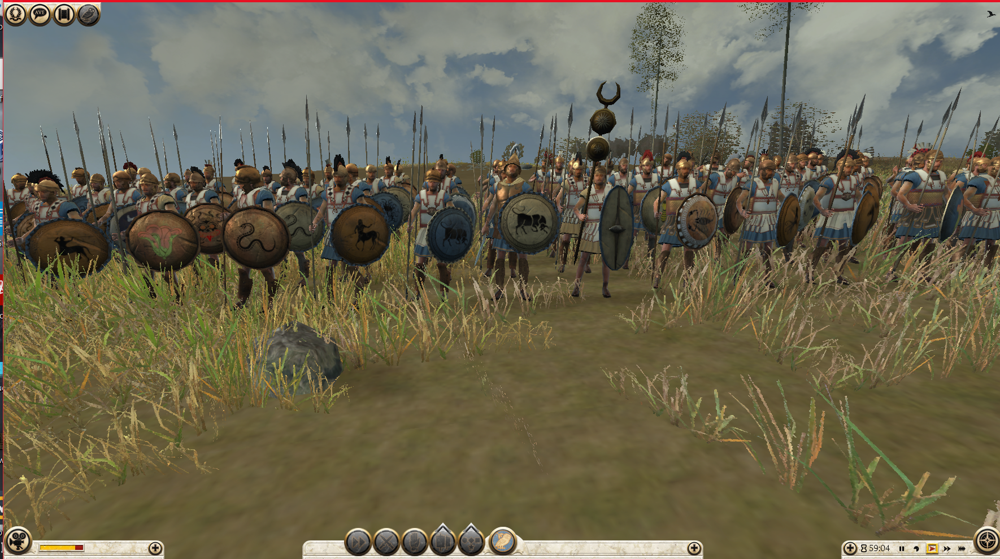
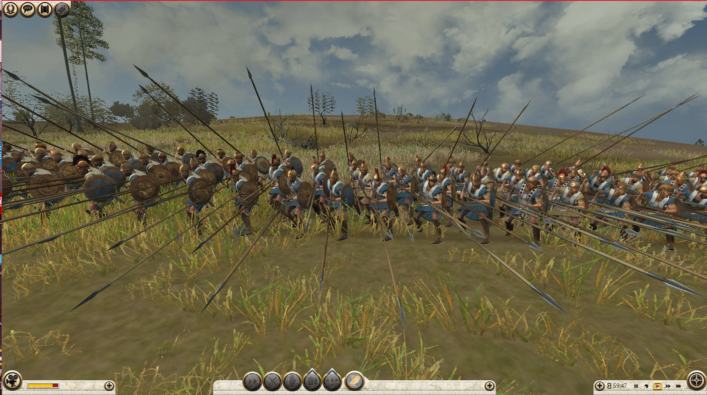
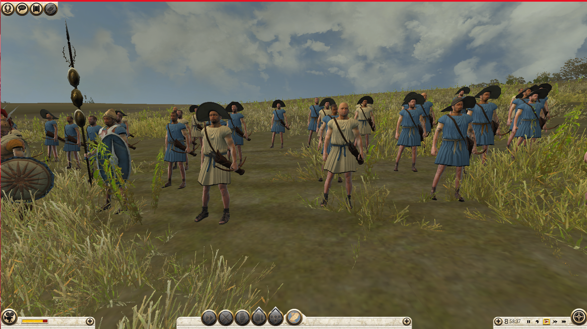

Charakterystyka
Ateny - kolebka demokracji.Twoją siłą jest flota , którą możesz wykorzystać do łupienia wrogich szlaków handlowych. Jako Ateny czerpiesz większe zyski z handlu i kultury niż z podbijania innych osad. Od południa graniczysz z przyjaźnie nastawioną Spartą jednakże jesteś w stanie wojny z Epirotami na zachodzie. Nie zapomnij o tym, że zaczynasz jako wasal położonej na północy Macedonii.
Polecane jednostki
Hoplici

Hoplici oferują dobre statystyki za relatywnie niski koszt.To będzie twoja najczęściej używana piechota grecka.
-
Zalety:
- Dobry pancerz i dyscyplina
- Dostępni na samym początku gry
- Szyk hoplitów
- Premia przeciwko jeździe
-
Wady:
- Niska prędkość
Doborowi hoplici


Znacznie lepsza wersja hoplitów idealna do długich walk defensywnych. Dobry wybór jeśli musisz związać walką ciężką piechotę
-
Zalety:
- Wysoki pancerz i dyscyplina
- Wysoka obrona w zwraciu
- Bonus przeciwko jeździe
- Szyk hoplitów
- Formacja czworoboku
- Jednostka podnosi poziom morale okolicznych oddziałów
- Świetne odpieranie szarż
-
Wady:
- Niska prędkość
- Wysoki koszt werbunku i utrzymania
Falangici

Nie ma lepszej formacji do obrony niż falanga. Szarża piechotą na zbity szyk falangi od przodu zakończy się wysokimi stratami, natomiast szarża kawalerii kończy się jej anihilacją w pierwszych sekundach starcia.
-
Zalety:
- Dobry pancerz i dyscyplina
- Szyk falangi
-
Wady:
- Niska prędkość i mobilność
- Niskie statystyki ofensywne
- Niska obrona w zwarciu (brak szyku falangi)
- Wrażliwi na ostrzał i ataki z flanki i tyłu
Jazda obywatelska


Najpowszechniejsza kawaleria w greckim świecie. Rozjeżdżanie łuczników i ataki od tyłu to ich specjalność.
-
Zalety:
- Dobry pancerz i zdrowie
- Dostępni na samym początku gry
- Formacja rombu
- Duża prędkość
-
Wady:
- Słabi w długiej walce wręcz
Hippeis


Musisz wybić dziurę w szyku piechoty robiąć przy tym zamieszanie? Żaden problem! Szarże Hippeis nauczą wrogich żołnierzy latać i zadadzą duże straty wrogowi
-
Zalety:
- Dobra dyscyplina
- Formacja rombu
- Bardzo duży poziom zdrowia
- Duża premia do szarży
- Dobre statystyki ofensywne
- Jednostka podnosi poziom morale pobliskich oddziałów
- Duża prędkość
-
Wady:
- Słabi w długiej walce wręcz
- Kiepska obrona w zwraciu
- Brak tarcz - wystawieni na ostrzał
- Duży koszt werbunku i utrzymania
Łucznicy

Tani oddział łuczników do wybijania części żołnierzy wroga przed bitwą lub obrony miast z murów.
-
Zalety:
- Niski koszt webunku i utrzymania
- Duże obrażenia od strzału
- Duża prędkość
- Oddział wolno się męczy
-
Wady:
- Nieudolni walce wręcz
- Krótszy zasięg niż inni